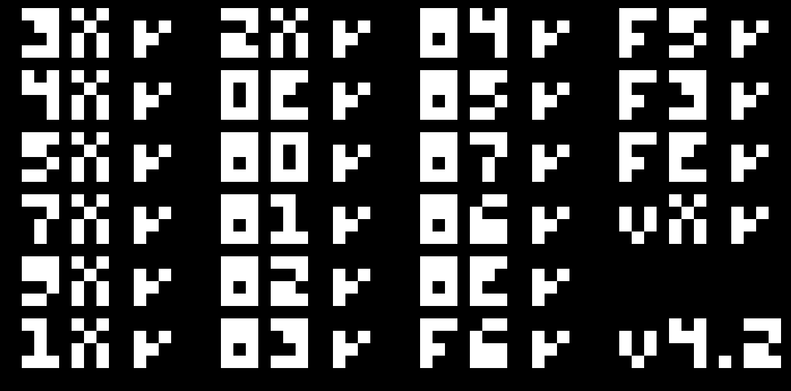

Its inevitable if someone is getting into emulator development, the first obstacle is chip8. Emulating is a techinque of running software desing for a specific hardware to run on the host computer so emulating is a software that emualtes physical hardware.
But chip8 is not really a piece of hardware hardware that we are emulating but it's an intrepreter, so it more like chip8 intrepreter, but i will call it an emulator.
NOTE: This is not a step by step tutorial for creating a chip8 emulator but a techincal refrence of how mine works internally.

gcc: compiler for c.
make: build system.
SDL2: windowing and input.
#define MEMORY 4096
#define REGISTER 16
#define STACK 16
#define DISPLAY_WIDTH 64
#define DISPLAY_HEIGHT 32
#define NUM_PAD 16
typedef struct {
uint8_t memory[MEMORY]; // 4kb memory
uint8_t V[16]; // 16 8-bit register VF=carry flag
uint16_t I; // Index register
uint16_t pc; // Program counter address of current inst
uint16_t stack[STACK]; // stack call subroutines/functions and return from them
uint8_t sp; // stack pointer
uint8_t delay_timer; // delay timer
uint8_t sound_timer; // sound timer
uint8_t display[DISPLAY_WIDTH*DISPLAY_HEIGHT]; // 64*32 pixel display
bool keypad[NUM_PAD]; // keypad state [0-F]
bool draw_flag; // redraw flag
} chip8_t;
uint16_t opcode = (memory[pc] << 8) | memory[pc+1]; uint8_t first_nibble = (opcode & 0xF000) >> 12; // 1111 0000 0000 0000 uint8_t x = (opcode & 0x0F00) >> 8; // 0000 1111 0000 0000 uint8_t y = (opcode & 0x00F0) >> 4; // 0000 0000 1111 0000 uint8_t n = opcode & 0x000F; // 0000 0000 0000 1111 uint8_t kk = opcode & 0x00FF; // 0000 0000 1111 1111 uint16_t nnn = opcode & 0x0FFF; // 0000 1111 1111 1111 // opcode // 1111 1111 1111 1111
since a single instruction is (16bits/2bytes) long we can break down it down to bits and bytes.
first_nibble: the highest 4 bits to identify the instruction class (Type)
x: second nibble, usually used to look up register Vx
y: third nibble, usually used to look up register Vy
n: lowest 4 bits, typically used for a 4-bit immediate value (nibble)
kk: lowest 8 bits, used for an 8-bit immediate constant (byte)
nnn: lowest 12 bits, used for memory addresses (lookup/jump targets)
switch (first_nibble) {
case 0x0:
00E0: // clear screen
00EE: // Return from subroutine
0nnn: // NA
case 0x1: // 1nnn - Jump to address nnn
case 0x2: // 2nnn - Call subroutine at nnn
case 0x3: // 3xkk - Skip next instruction (vx == kk)
case 0x4: // 4xkk - Skip next instruction (vx != kk)
case 0x5: // 5xy0 - Skip next instruction (vx == vy)
case 0x6: // 6xkk - Set vx = kk
case 0x7: // 7xkk - Set vx += kk
/* ARITHMETIC, LOGIC, AND BITWISE OPERATIONS */
case 0x8:
8xy0: LD vx = vy
8xy1: OR vx |= vy
8xy2: AND vx &= vy
8xy3: XOR vx ^= vy
8xy4: set vf, if vx + vy overflow i.e > 255
8xy5: set vf = (vx >= vy); then vx -= vy;
8xy6: set vf = (vx & 1); then vx >>= 1;
8xy7: set vf = (vy >= vx); then vx = vy - vx;
8xyE: set vf = (vx >> 7) & 1); then vx <<= 1;
case 0x9: // 9xy0 - Skip next instruction (vx != vy)
case 0xA: // Annn - Set index register (I = nnn)
case 0xB: // Bnnn - Jump to address (pc = nnn + v0)
case 0xC: // Cxkk - Random Num Generation (vx = (random byte && kk))
/* DRAW SPIRTE Draw n-byte sprite at (vx, vy) */
case 0xD:
/* KEYPAD STUFF */
case 0xE:
Ex9E: // if (keypad[vx & 0xF]) Skip i.e pc += 2;
ExA1 // if (!keypad[vx & 0xF]) Skip i.e pc += 2;
/* TIMERS, MEMORY, BCD, AND REGISTER DUMPS */
case 0xF:
Fx07: // set vx = delay_timer
/* wait for keypress [see src code] */
*Fx0A:
Fx15: // set delay_timer = vx
Fx18: // set sound_timer = vx
Fx1E: // set IR += vx
/* FONT */
Fx29: Index_Register = 0x50 + (vx & 0xF) * 5;
/* BCD */
Fx33:
memory[I + 0] = c8->vx / 100;
memory[I + 1] = (c8->vx / 10) % 10;
memory[I + 2] = c8->vx % 10;
Fx55: for (int i = 0; i <= x; i++) memory[I + i] = V[i];
Fx65: for (int i = 0; i <= x; i++) V[i] = memory[I + i];
}